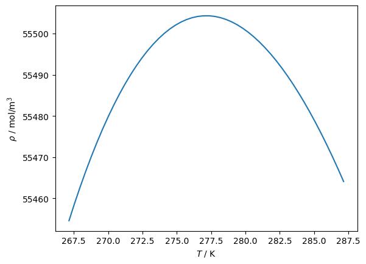
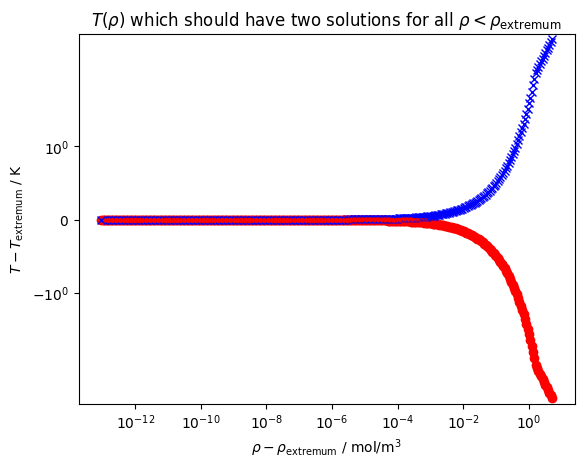
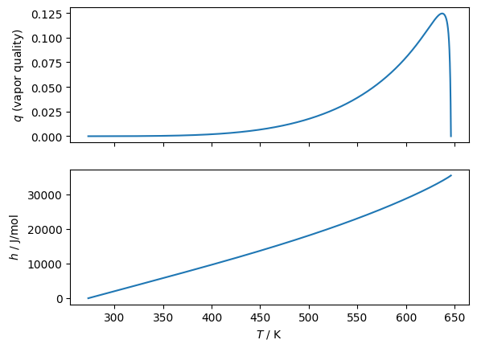
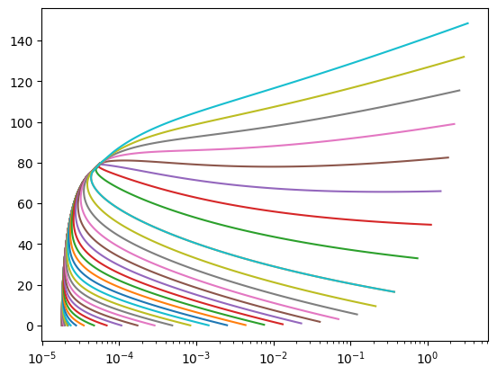

Superancillary functions¶
TODO: object hierarchy
TODO: rough description of algorithms
[1]:
import json
import timeit
import tarfile
import functools
import itertools
from dataclasses import dataclass
import numpy as np
import matplotlib.pyplot as plt
import ChebTools
import teqpflsh
import CoolProp.CoolProp as CP
Build a superancillary function for water
To begin, load from the provided files:
\(\rho'(T)\)
\(\rho''(T)\)
\(p(T)\)
And then use the EOS (as implemented in CoolProp, but REFPROP would be fine too) to add
\(h'(T)\), \(h''(T)\)
\(s'(T)\), \(s''(T)\)
\(u'(T)\), \(u''(T)\)
[2]:
FLD = 'WATER'
with tarfile.open('superancillaryJSON.tar.xz', mode='r:xz') as tar:
# for member in tar.getmembers(): print(member)
j = json.load(tar.extractfile(f'./{FLD}_exps.json'))
sa = teqpflsh.SuperAncillary(json.dumps(j))
ca = sa.get_approx1d(k='D', q=0)
print('Water has non-monotonic rho\'(T). The monotonic intervals are:')
for inter in ca.monotonic_intervals:
print(f'({inter.xmin}, {inter.xmax}) K')
Water has non-monotonic rho'(T). The monotonic intervals are:
(273.16, 277.15003423906836) K
(277.15003423906836, 647.0959999999867) K
[3]:
AS = CP.AbstractState('HEOS', 'Water')
def calc(T, rho, AS, key):
AS.specify_phase(CP.iphase_gas)
AS.update(CP.DmolarT_INPUTS, rho, T)
val = AS.keyed_output(key)
AS.unspecify_phase()
return val
# Add another thermodynamic variable to the superancillary
# Speed is order of ms per variable, likely MUCH faster in C++
# caller is a callable function that takes temperature and density and returns a value of a given property type
# here we can avoid flash calculations because we take T,rho value from the superancillary and
# get values for the "other" variable
sa.add_variable(k='H', caller=functools.partial(calc, AS=AS, key=CP.iHmolar))
sa.add_variable(k='S', caller=functools.partial(calc, AS=AS, key=CP.iSmolar))
sa.add_variable(k='U', caller=functools.partial(calc, AS=AS, key=CP.iUmolar))
# Here is the call signature for the method
print(sa.add_variable.__doc__)
add_variable(self, *, k: str, caller: collections.abc.Callable[[float, float], float]) -> None
[4]:
# Solving for temperature given saturated liquid density, around the density maximum
# as a challenging test for the rootfinding. The approach works well, even very close(!)
# to the extremum
ca = sa.get_approx1d(k='D', q=0)
print('The monotonic intervals are:')
for inter in ca.monotonic_intervals:
print(f'({inter.xmin}, {inter.xmax}) K')
print('T at extrema in rho(T):', ca.x_at_extrema, 'K')
print('and corresponding value', ca.eval(ca.x_at_extrema[0]), 'mol/m³')
plt.figure()
Trange = np.linspace(-10, 10) + ca.x_at_extrema[0]
plt.plot(Trange, [ca.eval(T) for T in Trange])
plt.gca().set(xlabel=r'$T$ / K', ylabel=r'$\rho$ / mol/m$^3$')
# Starting at a density below the extremum, test getting
# very close to the extremum and solving for temperature
plt.figure()
y_extremum = ca.eval(ca.x_at_extrema[0])
delta = y_extremum - 0.9999*y_extremum
while delta > 1e-13:
# First output argument is the solution, second is the number of iterations required
Tsoln = ca.get_x_for_y(y=y_extremum-delta)
if len(Tsoln) != 2:
break
if Tsoln[0][0] > Tsoln[1][0]:
break
delta /= 1.1
plt.plot(delta, Tsoln[0][0]-ca.x_at_extrema[0], 'ro')
plt.plot(delta, Tsoln[1][0]-ca.x_at_extrema[0], 'bx')
plt.xscale('log')
plt.yscale('symlog')
plt.gca().set(xlabel=r'$\rho-\rho_{\rm extremum}$ / mol/m$^3$', ylabel=r'$T-T_{\rm extremum}$ / K')
plt.title(r'$T(\rho)$ which should have two solutions for all $\rho < \rho_{\rm extremum}$')
plt.show()
The monotonic intervals are:
(273.16, 277.15003423906836) K
(277.15003423906836, 647.0959999999867) K
T at extrema in rho(T): [277.15003423906836] K
and corresponding value 55504.316178396366 mol/m³


[5]:
# Time forward evalution of a chebyshev expansion
T = np.linspace(273.16, 290, 1000000)
ybuf = np.zeros_like(T)
tic = timeit.default_timer()
ca.eval_many(T, ybuf)
toc = timeit.default_timer()
print('rho(T) takes', (toc-tic)/len(T)*1e6, 'μs/call')
# Time the rootfinding in the superancillary
tic = timeit.default_timer()
ybuf = np.linspace(55400, 55503, 1000000)
xbuf = np.zeros_like(ybuf)
ca.count_x_for_y_many(ybuf, 64, 100, 1e-10, xbuf)
toc = timeit.default_timer()
print('T(rho) takes', (toc-tic)/len(xbuf)*1e6, 'μs/call')
print('so the inversion is much slower, and here there are two candidate regions, so it is again two times worse than normal fluids, which would be more like:')
tic = timeit.default_timer()
ybuf = np.linspace(20400, 20503, 1000000)
xbuf = np.zeros_like(ybuf)
ca.count_x_for_y_many(ybuf, 64, 100, 1e-10, xbuf)
toc = timeit.default_timer()
print('T(rho) takes', (toc-tic)/len(xbuf)*1e6, 'μs/call when there is only one solution')
rho(T) takes 0.016125665977597237 μs/call
T(rho) takes 0.6450482499785721 μs/call
so the inversion is much slower, and here there are two candidate regions, so it is again two times worse than normal fluids, which would be more like:
T(rho) takes 0.45679099997505546 μs/call when there is only one solution
Rootfinding is based on the TOMS748 method, which is an advanced version of the Brent method that is bounded and uses the optimal combination of secant, quadratic, and cubic interpolation mixed with bisection.
[6]:
T_K, steps = ca.get_x_for_y(y=20250)[0]
print(f'{steps} iterations were required')
7 iterations were required
which is about that much higher than the forward evaluation of a superancillary itself
[7]:
ca = sa.get_approx1d(k='D', q=0)
rhoc = ca.monotonic_intervals[1].ymin
# Pick a density where there is only one possible solution for temperature
for D in [22082.571366851185]:
# Get the saturation temperature, if possible
Tlims = [_ for _ in ca.get_x_for_y(y=D)]
if len(Tlims) == 1:
Trange = [ca.expansions[0].xmin, Tlims[0][0]]
else:
Trange = [Tlims[0][0], Tlims[1][0]]
Ts = np.linspace(*Trange, 100000)
# Non-iteratively solve for q for value of density
q = np.array([sa.get_vaporquality(T=T_, propval=D, k='D') for T_ in Ts])
fig, (ax1, ax2) = plt.subplots(2, 1, sharex=True)
# And then plot another property
y = np.zeros_like(q)
tic = timeit.default_timer()
sa.get_yval_many(q=q, T=Ts, k='H', y=y)
toc = timeit.default_timer()
print((toc-tic)/len(T)*1e6, 'μs/call')
ax1.plot(Ts, q,)
ax2.plot(Ts, y, label=D)
ax1.set(ylabel='$q$ (vapor quality)')
ax2.set(xlabel='$T$ / K', ylabel='$h$ / J/mol')
0.005306542036123574 μs/call

Plot lines of constant quality in the two-phase region according to the superancillary functions
[8]:
eps = 1e-6
Tt = 273.16
Tc = 647.0959999999867
for T in np.linspace(Tt, Tc-eps, 10000):
p = sa.get_yval(T=T, q=1, k='P')
Tnew = sa.get_T_from_p(p=p)
DELTAT = Tnew-T
if abs(DELTAT) > 0.001:
print(T, p, Tnew-T)
[9]:
caV = sa.get_approx1d(k='D', q=1)
# for interval in caV.monotonic_intervals:
# print(interval)
# print({k: getattr(interval,k) for k in dir(interval) if not k.startswith('__')})
# for m in interval.expansioninfo:
# print({k: getattr(m,k) for k in dir(m) if not k.startswith('__')})
# print(m.xmin, m.xmax)
print(caV.eval(273.16), caV.eval(647.096), caV.get_x_for_y(y=200))
# print([0].ymin, caV.monotonic_intervals[0].ymax)
# print(caV.get_x_for_y(y=200))
ca = sa.get_approx1d(k='D', q=0)
y = ca.eval(ca.x_at_extrema[0])*0.9999
Tlims = [_[0] for _ in ca.get_x_for_y(y=y)]
Ts = np.linspace(ca.expansions[0].xmin+1e-6, ca.expansions[-1].xmax-1e-6, 100)
# Ts = np.linspace(273.1600001, 280, 10000)
for Q in np.arange(1e-6, 1.0000, 0.1, dtype=float).tolist() + np.logspace(-8, -1, 30).tolist():
Qs = Q*np.ones_like(Ts)
rho = np.zeros_like(Ts)
sa.get_yval_many(T=Ts, q=Qs, k='D', y=rho)
other = np.zeros_like(Ts)
kother = 'S'
sa.get_yval_many(T=Ts, q=Qs, k=kother, y=other)
plt.plot(1/rho, other)
Tbuf = np.zeros_like(Ts)
qbuf = np.zeros_like(Ts)
countbuf = np.zeros_like(Ts)
tic = timeit.default_timer()
sa.solve_for_Tq_DX_many(rho, other, kother, 64, 100, 1e-10, Tbuf, qbuf, countbuf)
toc = timeit.default_timer()
print((toc-tic)/len(Tbuf)*1e6, 'μs/call from', np.mean(countbuf), 'steps on average')
for T_goal_, rho_, other_ in zip(Ts, rho, other):
soln = sa.solve_for_Tq_DX(rho_, other_, kother, 64, 100, 1e-10)
try:
T_ = soln.T; q_ = soln.q; count_ = soln.counter
except BaseException as be:
print(rho_, other_)
print(be, T_goal_, Q)
plt.plot(1/rho_, other_, 'o')
# plt.yscale('log')
plt.xscale('log')
0.2694700808656397 17873.7282300601 [(437.3594696512889, 10)]
1.4787499094381928 μs/call from 5.3 steps on average
1.970840385183692 μs/call from 8.17 steps on average
2.230409882031381 μs/call from 9.6 steps on average
2.2991601144894958 μs/call from 10.12 steps on average
2.3312499979510903 μs/call from 10.27 steps on average
2.40708002820611 μs/call from 10.58 steps on average
2.4075002875179052 μs/call from 10.59 steps on average
2.4258403573185205 μs/call from 10.79 steps on average
2.9266695491969585 μs/call from 10.46 steps on average
2.4391600163653493 μs/call from 9.92 steps on average
1.431250129826367 μs/call from 5.23 steps on average
1.4441600069403648 μs/call from 5.32 steps on average
1.497499761171639 μs/call from 5.2 steps on average
1.4208396896719933 μs/call from 5.19 steps on average
1.4154094969853759 μs/call from 5.2 steps on average
1.4266703510656953 μs/call from 5.25 steps on average
1.413749996572733 μs/call from 5.23 steps on average
1.5320797683671117 μs/call from 5.3 steps on average
1.4416599879041314 μs/call from 5.36 steps on average
1.4595797983929515 μs/call from 5.56 steps on average
1.5179102774709463 μs/call from 5.65 steps on average
1.5229103155434132 μs/call from 5.7 steps on average
1.5283300308510661 μs/call from 5.79 steps on average
1.5508296201005578 μs/call from 5.95 steps on average
1.604580320417881 μs/call from 6.03 steps on average
1.5791598707437515 μs/call from 6.08 steps on average
1.590839819982648 μs/call from 6.13 steps on average
1.5712500317022204 μs/call from 6.05 steps on average
1.6354199033230543 μs/call from 6.2 steps on average
1.5858298866078258 μs/call from 6.12 steps on average
1.5791598707437515 μs/call from 6.11 steps on average
1.5845795860514045 μs/call from 6.15 steps on average
1.5899998834356666 μs/call from 6.2 steps on average
1.6104202950373292 μs/call from 6.3 steps on average
1.736659905873239 μs/call from 6.71 steps on average
1.7420802032575011 μs/call from 6.94 steps on average
1.8787500448524952 μs/call from 7.27 steps on average
1.9300001440569758 μs/call from 7.41 steps on average
1.8570898100733757 μs/call from 7.45 steps on average
1.9204203272238374 μs/call from 8.04 steps on average

[10]:
eps = 1e-6
Tt = 273.16
Tc = 647.0959999999867
# A class storing the info for a single two-phase point
@dataclass
class TwoPhasePoint:
T: float
Q: float
D: float
H: float
S: float
U: float
P: float
@dataclass
class TwoPhaseResult:
Terr: float
Qerr: float
elap_us: float
count: float
proppair: list[str]
# Build up database of points for two-phase data
points = []
for T in np.linspace(Tt, Tc-eps, 300):
for q in np.linspace(eps, 1-eps, 500):
pt = TwoPhasePoint(
T = T,
Q = q,
P = sa.get_yval(T=T, q=q, k='P'),
D = sa.get_yval(T=T, q=q, k='D'),
H = sa.get_yval(T=T, q=q, k='H'),
S = sa.get_yval(T=T, q=q, k='S'),
U = sa.get_yval(T=T, q=q, k='U')
)
points.append(pt)
keys = ['D', 'H', 'S', 'U', 'P', 'T']
results = []
for proppair in itertools.combinations(keys, 2):
proppair = sorted(proppair)
if proppair == ['H', 'U']: continue
if proppair == ['P', 'T']: continue
val1 = np.array([getattr(pt, proppair[0]) for pt in points])
val2 = np.array([getattr(pt, proppair[1]) for pt in points])
flash_key = teqpflsh.get_pair_from_chars(*proppair)
tic = timeit.default_timer()
T = np.zeros_like(val1)
q = np.zeros_like(val2)
count = np.zeros_like(val2, dtype=int)
sa.flash_many(flash_key, val1, val2, T, q, count)
toc = timeit.default_timer()
valQ = np.array([getattr(pt, 'Q') for pt in points])
valT = np.array([getattr(pt, 'T') for pt in points])
DELTAT = np.abs((valT-T))
badsolns = sum(T < 0) #
results.append(TwoPhaseResult(
elap_us=(toc-tic)/len(val1)*1e6,
Terr=float(np.mean(np.abs((valT-T)))),
Qerr=float(np.mean(np.abs((valQ-q)))),
count=float(np.mean(count)),
proppair=proppair
))
for el in sorted(results, key=lambda x: x.elap_us):
print(el)
TwoPhaseResult(Terr=0.0, Qerr=2.795420235938882e-16, elap_us=0.05967111326754093, count=0.0, proppair=['D', 'T'])
TwoPhaseResult(Terr=0.0, Qerr=8.929621463779706e-16, elap_us=0.06645833336127302, count=0.0, proppair=['T', 'U'])
TwoPhaseResult(Terr=0.0, Qerr=1.1279329866925603e-15, elap_us=0.06656027981080115, count=0.0, proppair=['S', 'T'])
TwoPhaseResult(Terr=0.0, Qerr=7.645675477278846e-16, elap_us=0.06656500006405015, count=0.0, proppair=['H', 'T'])
TwoPhaseResult(Terr=7.164476301113609e-13, Qerr=7.684752486105178e-10, elap_us=0.12980527981805304, count=0.0, proppair=['D', 'P'])
TwoPhaseResult(Terr=7.164476301113609e-13, Qerr=7.684694347776641e-10, elap_us=0.1314924998829762, count=0.0, proppair=['P', 'S'])
TwoPhaseResult(Terr=7.164476301113609e-13, Qerr=7.684689638248323e-10, elap_us=0.13159055340414247, count=0.0, proppair=['P', 'U'])
TwoPhaseResult(Terr=7.164476301113609e-13, Qerr=7.684687278664324e-10, elap_us=0.13510666671209037, count=0.0, proppair=['H', 'P'])
TwoPhaseResult(Terr=9.051291272044182e-14, Qerr=2.2156901951207798e-11, elap_us=2.0759752734253807, count=0.0, proppair=['S', 'U'])
TwoPhaseResult(Terr=1.6613512343610638e-13, Qerr=1.0721330329692832e-10, elap_us=2.202141946569706, count=0.0, proppair=['H', 'S'])
TwoPhaseResult(Terr=2.3948511322184155e-14, Qerr=2.2876501559810492e-11, elap_us=2.232273886911571, count=0.0, proppair=['D', 'S'])
TwoPhaseResult(Terr=2.379654991576293e-14, Qerr=1.6898106011334103e-11, elap_us=2.3842438865297786, count=0.0, proppair=['D', 'U'])
TwoPhaseResult(Terr=2.4474881380835237e-14, Qerr=1.7895061607415564e-11, elap_us=2.4198447268766663, count=0.0, proppair=['D', 'H'])